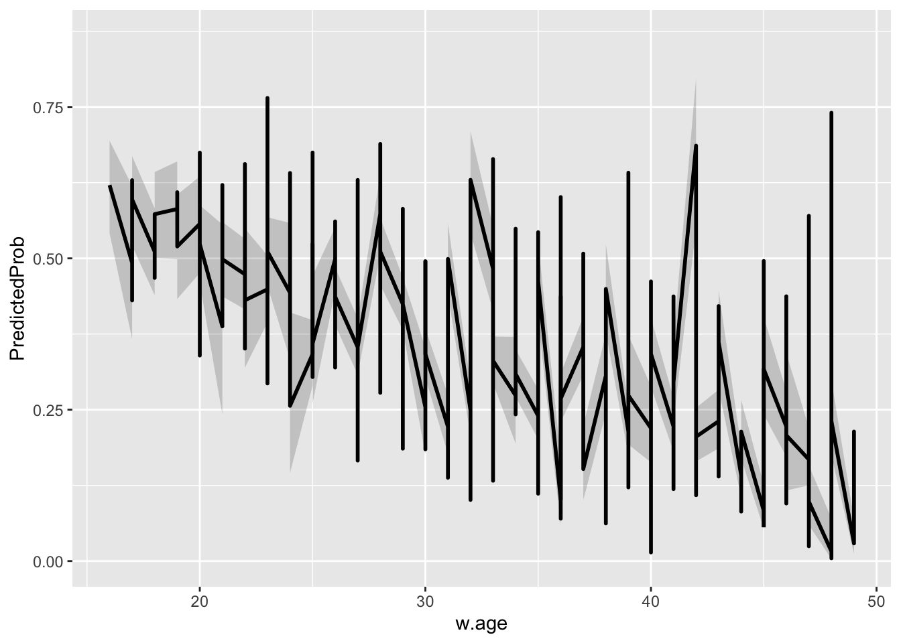
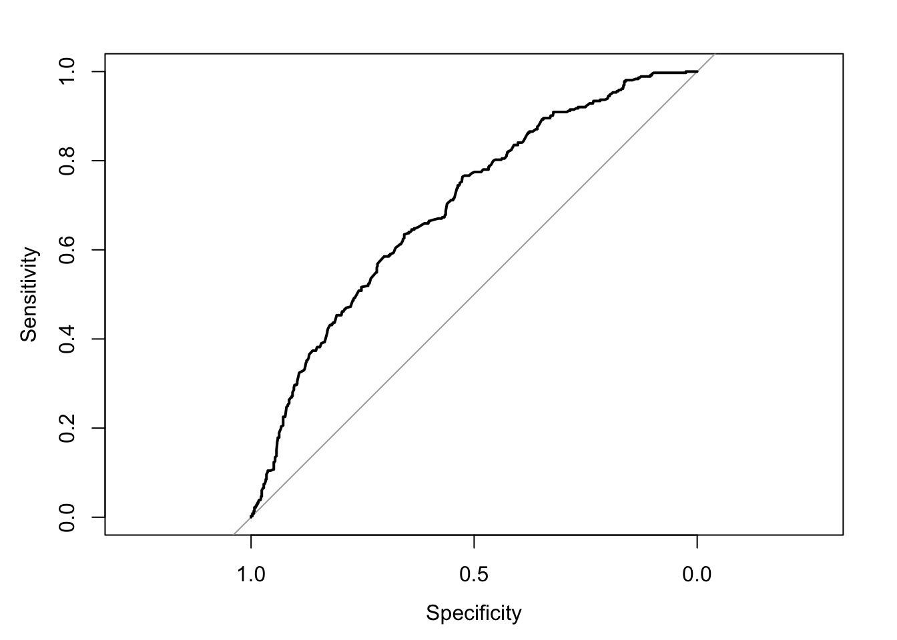

Objectives:
The objective of this document is to go over some of the classification methods using R. After completing this tutorial you will be able to:
Let’s load the data:
data(iris)
head(iris)## Sepal.Length Sepal.Width Petal.Length Petal.Width Species
## 1 5.1 3.5 1.4 0.2 setosa
## 2 4.9 3.0 1.4 0.2 setosa
## 3 4.7 3.2 1.3 0.2 setosa
## 4 4.6 3.1 1.5 0.2 setosa
## 5 5.0 3.6 1.4 0.2 setosa
## 6 5.4 3.9 1.7 0.4 setosashuffleIris <- iris[sample(nrow(iris)),] #Shuffle the dataset
trainIris <- shuffleIris[1:100,] #Subset the training set
testIris <- shuffleIris[101:150,-5] #Subset the test set without the class column
testClass <- shuffleIris[101:150,5] #Get test classes into a separate vectorLogistic regression is the type of regression where you fit a binary classification model. A binary classification model is the type of model where your output variable has 2 classes. Now this doesn?t mean that if you have a data that has more than one class (such as the iris data) cannot be modeled using a logistic regression. The idea is that you model each class vs. all others individually.
Let’s load the data:
require(caret)
data <- read.csv(url("http://archive.ics.uci.edu/ml/machine-learning-databases/cmc/cmc.data"), sep=",", header = F)
names(data) <- c("w.age", "w.ed", "h.ed", "child", "rel","w.occ", "h.occ", "ind", "med", "outcome")
data$w.ed <- as.factor(data$w.ed)
data$h.ed <- as.factor(data$h.ed)
data$rel<-as.factor(data$rel)
data$w.occ <- as.factor(data$w.occ)
data$h.occ <- as.factor(data$h.occ)
data$ind <- as.factor(data$ind)
data$med <- as.factor(data$med)
data$outcome <- as.factor(data$outcome)
summary(data)## w.age w.ed h.ed child rel w.occ h.occ
## Min. :16.00 1:152 1: 44 Min. : 0.000 0: 220 0: 369 1:436
## 1st Qu.:26.00 2:334 2:178 1st Qu.: 1.000 1:1253 1:1104 2:425
## Median :32.00 3:410 3:352 Median : 3.000 3:585
## Mean :32.54 4:577 4:899 Mean : 3.261 4: 27
## 3rd Qu.:39.00 3rd Qu.: 4.000
## Max. :49.00 Max. :16.000
## ind med outcome
## 1:129 0:1364 1:629
## 2:229 1: 109 2:333
## 3:431 3:511
## 4:684
##
## As you can see, we have 3 classes in outcome variable, which means that we have to generate 3 different models to perform logistic regression on this data for each class.
Let’s subset the data into training and testing sets:
data <- data[sample(nrow(data)),] #Shuffles the data by sampling nrow(data) observations from the data without replacement
trainInd <- round(nrow(data)*0.7) #Take 70% of data as training
train <- data[1:trainInd,] #Subset training data
test.outcome <- data[-(1:trainInd),10] #Separate the outcome values of test
test <- data[-(1:trainInd),-10] #Subset test data and remove outcome variableIf you like, you can separate the training test further into training and validation tests to see if your model is working properly.
In R, we can train logistic regression with a single line of code. glm function computes logistic regression using family = binomial("logit") parameter. This means that our output variable has a binomial distribution of 1s and 0s. If you want to classify more that two outcomes, you will need to use two combinatorials of those outcomes (one vs. all). This is what we will try to do.
iris2 <-iris
iris2$Species<-as.numeric(iris2$Species)
#Create dataset for setosa
iris2.setosa <-iris2
iris2.setosa$Species <- as.factor(iris2.setosa$Species==1)
#Create dataset for versicolor
iris2.versicolor <-iris2
iris2.versicolor$Species <- as.factor(iris2.versicolor$Species==2)
#Create dataset for virginica
iris2.virginica <-iris2
iris2.virginica$Species <- as.factor(iris2.virginica$Species==3)
logit.setosa <- glm(Species~., data = iris2.setosa, family = binomial)
summary(logit.setosa)##
## Call:
## glm(formula = Species ~ ., family = binomial, data = iris2.setosa)
##
## Deviance Residuals:
## Min 1Q Median 3Q Max
## -3.185e-05 -2.100e-08 -2.100e-08 2.100e-08 3.173e-05
##
## Coefficients:
## Estimate Std. Error z value Pr(>|z|)
## (Intercept) -16.946 457457.097 0 1
## Sepal.Length 11.759 130504.042 0 1
## Sepal.Width 7.842 59415.385 0 1
## Petal.Length -20.088 107724.594 0 1
## Petal.Width -21.608 154350.616 0 1
##
## (Dispersion parameter for binomial family taken to be 1)
##
## Null deviance: 1.9095e+02 on 149 degrees of freedom
## Residual deviance: 3.2940e-09 on 145 degrees of freedom
## AIC: 10
##
## Number of Fisher Scoring iterations: 25class1.train <- train
class1.train$outcome <- class1.train$outcome==1 #Get true for class = 1, false for otherwise
class1.model <- glm(outcome~., data = class1.train, family = binomial("logit"))
summary(class1.model)##
## Call:
## glm(formula = outcome ~ ., family = binomial("logit"), data = class1.train)
##
## Deviance Residuals:
## Min 1Q Median 3Q Max
## -2.1125 -0.9166 -0.6267 1.0350 2.2185
##
## Coefficients:
## Estimate Std. Error z value Pr(>|z|)
## (Intercept) -0.42034 0.72975 -0.576 0.56461
## w.age 0.08825 0.01200 7.356 1.89e-13 ***
## w.ed2 -0.32998 0.31380 -1.052 0.29300
## w.ed3 -0.85817 0.32459 -2.644 0.00820 **
## w.ed4 -1.67468 0.35424 -4.728 2.27e-06 ***
## h.ed2 0.17011 0.46413 0.367 0.71398
## h.ed3 -0.47297 0.44817 -1.055 0.29127
## h.ed4 -0.25677 0.45433 -0.565 0.57196
## child -0.38825 0.04352 -8.921 < 2e-16 ***
## rel1 0.39730 0.20970 1.895 0.05815 .
## w.occ1 -0.14685 0.16323 -0.900 0.36829
## h.occ2 0.14530 0.20449 0.711 0.47738
## h.occ3 -0.06621 0.20280 -0.326 0.74407
## h.occ4 -0.80356 0.51107 -1.572 0.11588
## ind2 -0.43075 0.29086 -1.481 0.13862
## ind3 -0.62852 0.27307 -2.302 0.02135 *
## ind4 -0.79429 0.28081 -2.829 0.00468 **
## med1 0.55970 0.31297 1.788 0.07372 .
## ---
## Signif. codes: 0 '***' 0.001 '**' 0.01 '*' 0.05 '.' 0.1 ' ' 1
##
## (Dispersion parameter for binomial family taken to be 1)
##
## Null deviance: 1396.6 on 1030 degrees of freedom
## Residual deviance: 1197.4 on 1013 degrees of freedom
## AIC: 1233.4
##
## Number of Fisher Scoring iterations: 4There are some irrelevant features in this model, so we can use stepwise removal to retain only relevant ones. There are other methods for variable selection which we will not cover in this tutorial.
class1.model2 <- step(class1.model, direction="backward", trace=0)
summary(class1.model2)##
## Call:
## glm(formula = outcome ~ w.age + w.ed + child + rel + ind + med,
## family = binomial("logit"), data = class1.train)
##
## Deviance Residuals:
## Min 1Q Median 3Q Max
## -2.1269 -0.9198 -0.6351 1.0251 2.2674
##
## Coefficients:
## Estimate Std. Error z value Pr(>|z|)
## (Intercept) -0.81286 0.53084 -1.531 0.12571
## w.age 0.08943 0.01170 7.647 2.06e-14 ***
## w.ed2 -0.39169 0.30280 -1.294 0.19581
## w.ed3 -0.96188 0.30018 -3.204 0.00135 **
## w.ed4 -1.71114 0.30929 -5.532 3.16e-08 ***
## child -0.37920 0.04253 -8.917 < 2e-16 ***
## rel1 0.38892 0.20608 1.887 0.05913 .
## ind2 -0.42356 0.28694 -1.476 0.13991
## ind3 -0.60055 0.26872 -2.235 0.02543 *
## ind4 -0.76662 0.27417 -2.796 0.00517 **
## med1 0.61809 0.30760 2.009 0.04449 *
## ---
## Signif. codes: 0 '***' 0.001 '**' 0.01 '*' 0.05 '.' 0.1 ' ' 1
##
## (Dispersion parameter for binomial family taken to be 1)
##
## Null deviance: 1396.6 on 1030 degrees of freedom
## Residual deviance: 1207.8 on 1020 degrees of freedom
## AIC: 1229.8
##
## Number of Fisher Scoring iterations: 4After generating the model for outcome = 1, not we have to generate models for other outcome values.
For outcome = 2:
class2.train <- train
class2.train$outcome <- class2.train$outcome==2 #Get true for class = 1, false for otherwise
class2.model <- glm(outcome~., data = class2.train, family = binomial("logit"))
summary(class2.model)##
## Call:
## glm(formula = outcome ~ ., family = binomial("logit"), data = class2.train)
##
## Deviance Residuals:
## Min 1Q Median 3Q Max
## -1.7680 -0.7729 -0.5050 -0.2212 2.4823
##
## Coefficients:
## Estimate Std. Error z value Pr(>|z|)
## (Intercept) -2.121268 0.854999 -2.481 0.013101 *
## w.age 0.005235 0.012940 0.405 0.685802
## w.ed2 0.674754 0.490987 1.374 0.169354
## w.ed3 1.343115 0.489858 2.742 0.006109 **
## w.ed4 1.918850 0.508929 3.770 0.000163 ***
## h.ed2 -1.626070 0.553795 -2.936 0.003322 **
## h.ed3 -1.409588 0.505691 -2.787 0.005312 **
## h.ed4 -1.246652 0.505404 -2.467 0.013639 *
## child 0.187507 0.043313 4.329 1.5e-05 ***
## rel1 -0.449059 0.209038 -2.148 0.031696 *
## w.occ1 -0.154195 0.179486 -0.859 0.390289
## h.occ2 -0.591212 0.216225 -2.734 0.006252 **
## h.occ3 -0.435791 0.210930 -2.066 0.038824 *
## h.occ4 0.484215 0.599667 0.807 0.419394
## ind2 0.576236 0.479688 1.201 0.229645
## ind3 0.916482 0.452213 2.027 0.042697 *
## ind4 0.848853 0.457962 1.854 0.063805 .
## med1 -0.233267 0.435443 -0.536 0.592166
## ---
## Signif. codes: 0 '***' 0.001 '**' 0.01 '*' 0.05 '.' 0.1 ' ' 1
##
## (Dispersion parameter for binomial family taken to be 1)
##
## Null deviance: 1125.99 on 1030 degrees of freedom
## Residual deviance: 986.35 on 1013 degrees of freedom
## AIC: 1022.3
##
## Number of Fisher Scoring iterations: 5class2.model2 <- step(class2.model, direction="backward", trace=0)
summary(class2.model2)##
## Call:
## glm(formula = outcome ~ w.ed + h.ed + child + rel + h.occ + ind,
## family = binomial("logit"), data = class2.train)
##
## Deviance Residuals:
## Min 1Q Median 3Q Max
## -1.7882 -0.7871 -0.5062 -0.2208 2.4412
##
## Coefficients:
## Estimate Std. Error z value Pr(>|z|)
## (Intercept) -2.18112 0.67838 -3.215 0.00130 **
## w.ed2 0.73435 0.47668 1.541 0.12343
## w.ed3 1.40074 0.47541 2.946 0.00322 **
## w.ed4 1.99602 0.49410 4.040 5.35e-05 ***
## h.ed2 -1.65887 0.55128 -3.009 0.00262 **
## h.ed3 -1.43003 0.50235 -2.847 0.00442 **
## h.ed4 -1.27821 0.50204 -2.546 0.01089 *
## child 0.19364 0.03525 5.493 3.94e-08 ***
## rel1 -0.46615 0.20396 -2.286 0.02228 *
## h.occ2 -0.59257 0.21440 -2.764 0.00571 **
## h.occ3 -0.44458 0.20771 -2.140 0.03232 *
## h.occ4 0.46912 0.59588 0.787 0.43112
## ind2 0.61521 0.47904 1.284 0.19905
## ind3 0.97920 0.44657 2.193 0.02833 *
## ind4 0.93701 0.44849 2.089 0.03668 *
## ---
## Signif. codes: 0 '***' 0.001 '**' 0.01 '*' 0.05 '.' 0.1 ' ' 1
##
## (Dispersion parameter for binomial family taken to be 1)
##
## Null deviance: 1125.99 on 1030 degrees of freedom
## Residual deviance: 987.52 on 1016 degrees of freedom
## AIC: 1017.5
##
## Number of Fisher Scoring iterations: 5For outcome = 3:
class3.train <- train
class3.train$outcome <- class3.train$outcome==3 #Get true for class = 1, false for otherwise
class3.model <- glm(outcome~., data = class3.train, family = binomial("logit"))
summary(class3.model)##
## Call:
## glm(formula = outcome ~ ., family = binomial("logit"), data = class3.train)
##
## Deviance Residuals:
## Min 1Q Median 3Q Max
## -1.5893 -0.9483 -0.6193 1.1598 2.4029
##
## Coefficients:
## Estimate Std. Error z value Pr(>|z|)
## (Intercept) -1.02672 0.95851 -1.071 0.28409
## w.age -0.10318 0.01319 -7.823 5.15e-15 ***
## w.ed2 -0.02606 0.33195 -0.078 0.93743
## w.ed3 0.13962 0.33890 0.412 0.68035
## w.ed4 0.43167 0.36220 1.192 0.23334
## h.ed2 1.61496 0.77467 2.085 0.03710 *
## h.ed3 2.14820 0.76249 2.817 0.00484 **
## h.ed4 1.89658 0.76593 2.476 0.01328 *
## child 0.26184 0.04173 6.274 3.51e-10 ***
## rel1 -0.07328 0.20806 -0.352 0.72467
## w.occ1 0.23673 0.16737 1.414 0.15724
## h.occ2 0.39942 0.20077 1.989 0.04666 *
## h.occ3 0.46477 0.19750 2.353 0.01861 *
## h.occ4 0.58915 0.52428 1.124 0.26113
## ind2 0.29312 0.29825 0.983 0.32570
## ind3 0.27203 0.27886 0.976 0.32931
## ind4 0.46689 0.28535 1.636 0.10180
## med1 -0.43559 0.34304 -1.270 0.20415
## ---
## Signif. codes: 0 '***' 0.001 '**' 0.01 '*' 0.05 '.' 0.1 ' ' 1
##
## (Dispersion parameter for binomial family taken to be 1)
##
## Null deviance: 1338.9 on 1030 degrees of freedom
## Residual deviance: 1209.0 on 1013 degrees of freedom
## AIC: 1245
##
## Number of Fisher Scoring iterations: 5class3.model2 <- step(class3.model, direction="backward", trace=0)
summary(class3.model2)##
## Call:
## glm(formula = outcome ~ w.age + h.ed + child + med, family = binomial("logit"),
## data = class3.train)
##
## Deviance Residuals:
## Min 1Q Median 3Q Max
## -1.5661 -0.9718 -0.6441 1.1649 2.5347
##
## Coefficients:
## Estimate Std. Error z value Pr(>|z|)
## (Intercept) -0.23939 0.80136 -0.299 0.76515
## w.age -0.09987 0.01193 -8.372 < 2e-16 ***
## h.ed2 1.65759 0.76996 2.153 0.03133 *
## h.ed3 2.21558 0.75308 2.942 0.00326 **
## h.ed4 2.08094 0.74807 2.782 0.00541 **
## child 0.25003 0.03942 6.343 2.26e-10 ***
## med1 -0.58620 0.32107 -1.826 0.06789 .
## ---
## Signif. codes: 0 '***' 0.001 '**' 0.01 '*' 0.05 '.' 0.1 ' ' 1
##
## (Dispersion parameter for binomial family taken to be 1)
##
## Null deviance: 1338.9 on 1030 degrees of freedom
## Residual deviance: 1222.7 on 1024 degrees of freedom
## AIC: 1236.7
##
## Number of Fisher Scoring iterations: 5In these models, p-values show the significance level of the variables. The residual deviance and null deviance show the variability of the residuals and the model predictions respectively. We want them to be as small as possible. Coefficients explain the effect of that variable on the outcome.
Now that we have generated our models, we can perform classification with the test set we have set aside:
class1.test <- predict(class1.model2, test, type = "response") #Predicts probability of belonging to that class
class2.test <- predict(class2.model2, test, type = "response")
class3.test <- predict(class3.model2, test, type = "response")
classProbs <- cbind(class1.test, class2.test, class3.test)
classProbs <- classProbs/rowSums(classProbs)
tclassProbs <- data.frame(t(classProbs))
classes <- as.factor(sapply(tclassProbs, which.max))
confusionMatrix(classes, test.outcome)## Confusion Matrix and Statistics
##
## Reference
## Prediction 1 2 3
## 1 124 15 59
## 2 19 35 23
## 3 62 40 65
##
## Overall Statistics
##
## Accuracy : 0.5068
## 95% CI : (0.4591, 0.5543)
## No Information Rate : 0.4638
## P-Value [Acc > NIR] : 0.03897
##
## Kappa : 0.2185
##
## Mcnemar's Test P-Value : 0.16236
##
## Statistics by Class:
##
## Class: 1 Class: 2 Class: 3
## Sensitivity 0.6049 0.38889 0.4422
## Specificity 0.6878 0.88068 0.6542
## Pos Pred Value 0.6263 0.45455 0.3892
## Neg Pred Value 0.6680 0.84932 0.7018
## Prevalence 0.4638 0.20362 0.3326
## Detection Rate 0.2805 0.07919 0.1471
## Detection Prevalence 0.4480 0.17421 0.3778
## Balanced Accuracy 0.6463 0.63479 0.5482This model obviously does not perform well. It can only predict the true class 50% of the time, which is better than chance level in this case because prediction true class out of 3 possible values has a chance value of 33% but still, 50% is not good. This process is also very difficult to do when working with more than 3 classes. With 4 classes, you need to generate 6 models. With 5 classes, you need to generate 10 models and with 10 classes you need to generate 45 models for classification. There are packages that do this for you but they are won’t be covered in this tutorial.
To evaluate a single logistic regression model, we can use the following code to get the p-value associated with it. Assume we want to test if class3.model2 is a viable model:
with(class3.model2, pchisq(null.deviance - deviance, df.null - df.residual, lower.tail = FALSE))## [1] 1.017102e-22The p-value is <<0.05, so the model is appropriate for use.
Suppose we want to see the probability and the confidence interval of beloging to that class by a random variable in the dataset for class3.model2, first we need to get the probabilities of that class along with the standard error of the prediction, then we plot it with the desired variable:
newdata <- cbind(test, predict(class3.model2, newdata = test, type = "link",se = TRUE))
newdata <- within(newdata, {
PredictedProb <- plogis(fit)
LL <- plogis(fit - (1.96 * se.fit))
UL <- plogis(fit + (1.96 * se.fit))
})Suppose we want to see how the probabilities change by w.age, the following code visualizes that relationship:
ggplot(newdata, aes(x = w.age, y = PredictedProb)) + geom_ribbon(aes(ymin = LL,
ymax = UL), alpha = 0.2) + geom_line(size = 1)
SVMs can be used both for classification and regression. Luckily enough, you don’t have to explicitly perform one vs. all classification with SVMs. Even though SVMs perform one vs. all classification, they do this internally and we can simply use the svm function in e1071 package. Let’s use the iris data set:
require(e1071)
svm.model <- svm(Species~., data = trainIris)
summary(svm.model)##
## Call:
## svm(formula = Species ~ ., data = trainIris)
##
##
## Parameters:
## SVM-Type: C-classification
## SVM-Kernel: radial
## cost: 1
##
## Number of Support Vectors: 41
##
## ( 8 17 16 )
##
##
## Number of Classes: 3
##
## Levels:
## setosa versicolor virginicasvm.preds <- predict(svm.model, testIris)
confusionMatrix(svm.preds, testClass)## Confusion Matrix and Statistics
##
## Reference
## Prediction setosa versicolor virginica
## setosa 18 0 0
## versicolor 0 17 1
## virginica 0 1 13
##
## Overall Statistics
##
## Accuracy : 0.96
## 95% CI : (0.8629, 0.9951)
## No Information Rate : 0.36
## P-Value [Acc > NIR] : < 2.2e-16
##
## Kappa : 0.9396
##
## Mcnemar's Test P-Value : NA
##
## Statistics by Class:
##
## Class: setosa Class: versicolor Class: virginica
## Sensitivity 1.00 0.9444 0.9286
## Specificity 1.00 0.9688 0.9722
## Pos Pred Value 1.00 0.9444 0.9286
## Neg Pred Value 1.00 0.9688 0.9722
## Prevalence 0.36 0.3600 0.2800
## Detection Rate 0.36 0.3400 0.2600
## Detection Prevalence 0.36 0.3600 0.2800
## Balanced Accuracy 1.00 0.9566 0.9504SVM performed well on iris dataset with the accuracy of 94%.
ANNs can also be used for both regression and classification.
require(nnet)
nnet.model <- nnet(outcome~., data = train, size = 25) #size defines hidden layer size## # weights: 528
## initial value 1442.846663
## iter 10 value 1095.294289
## iter 20 value 1037.409294
## iter 30 value 954.703754
## iter 40 value 884.555538
## iter 50 value 857.707922
## iter 60 value 851.270713
## iter 70 value 823.847607
## iter 80 value 801.491484
## iter 90 value 781.096545
## iter 100 value 764.680800
## final value 764.680800
## stopped after 100 iterationsprint(nnet.model)## a 17-25-3 network with 528 weights
## inputs: w.age w.ed2 w.ed3 w.ed4 h.ed2 h.ed3 h.ed4 child rel1 w.occ1 h.occ2 h.occ3 h.occ4 ind2 ind3 ind4 med1
## output(s): outcome
## options were - softmax modellingnnet.preds <- predict(nnet.model, test) #Returns class probabilities, so we should perform some data cleaning as we did in the logistic regression
nnet.preds <- nnet.preds/rowSums(nnet.preds)
tnnet.preds <- data.frame(t(nnet.preds))
classes <- as.factor(sapply(tnnet.preds, which.max))
levels(classes) <- c("1","2","3")
confusionMatrix(classes, test.outcome)## Confusion Matrix and Statistics
##
## Reference
## Prediction 1 2 3
## 1 103 15 55
## 2 35 38 31
## 3 67 37 61
##
## Overall Statistics
##
## Accuracy : 0.457
## 95% CI : (0.4099, 0.5047)
## No Information Rate : 0.4638
## P-Value [Acc > NIR] : 0.6303
##
## Kappa : 0.16
##
## Mcnemar's Test P-Value : 0.0212
##
## Statistics by Class:
##
## Class: 1 Class: 2 Class: 3
## Sensitivity 0.5024 0.42222 0.4150
## Specificity 0.7046 0.81250 0.6475
## Pos Pred Value 0.5954 0.36538 0.3697
## Neg Pred Value 0.6208 0.84615 0.6895
## Prevalence 0.4638 0.20362 0.3326
## Detection Rate 0.2330 0.08597 0.1380
## Detection Prevalence 0.3914 0.23529 0.3733
## Balanced Accuracy 0.6035 0.61736 0.5312Neural Network performed on par with the logistic regression. However, neural network is very sensitive to hidden layer size. It is advised to use different sizes of hidden layers when generating neural network models.
Please refer to the additional resources at the end to discover more about different neural net models such as Adaline and RNN.
There are several evaluation measures reported in the outputs of the models generated above. Three most important values are ?Sensitivity?, ?Specificity? and ?Accuracy?. Accuracy gives you which percent of the data you correctly classified. However this is not a good measure if there is a class unbalance. For instance, let?s say that you have 100 data points of which 95 are class a and 5 are class b. You can classify all 100 points as class a and you will still have 95% accuracy, even though you failed to find any data that belongs to class b. This is why we need sensitivity and specificity. Sensitivity tells us how many of the data that are of class a, we were able to classify as class a. In this example, this would be 1. Because every data that belonged to class a was classified as class a. Specificity tells us how many data points that were class b were classified as class b. In this example, specificity will be zero because none of the data that were class b was classified as such. Ideally, we want both of these values to be close to one. If all your values are close to one, then you have a good model.
In a Receiver Operating Characteristic (ROC) curve the true positive rate (Sensitivity) is plotted in function of the false positive rate (100-Specificity) for different cut-off points. Each point on the ROC curve represents a sensitivity/specificity pair corresponding to a particular decision threshold. A test with perfect discrimination (no overlap in the two distributions) has a ROC curve that passes through the upper left corner (100% sensitivity, 100% specificity). Therefore the closer the ROC curve is to the upper left corner, the higher the overall accuracy of the test.
Let’s plot ROC curve of the class3.model2 that we fit with logistic regression:
#install.packages(pROC)
class3probs<-predict(class3.model2,type="response")
require(pROC)
roccurve <- roc(class3.model2$y, class3probs)
plot(roccurve)
auc(roccurve)## Area under the curve: 0.6961We want that curve to be far away from straight line. Ideally we want the area under the curve as high as possible. We want to make almost 0% mistakes while identifying all the positives, which means we want to see AUC value near to 1.
As can be seen, the AUC for logistic regression model of class 3 is 0.66. It is a fairly good model but it can be enhanced.
caret package.mlogit package